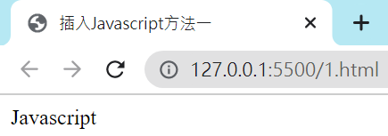
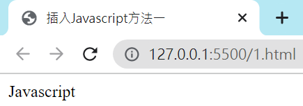

21205郭家妤 21206陳庭蓁
網頁程式的HTML, CSS及少量Javascript
網頁程式大部分Javascript以及內文的撰寫
由於在上學期未做出滿意的網頁，加上對於網頁程式的熱情不減反增，因此毅然決定繼續學習網頁程式，並做出滿意的成品。
我們希望能藉由這次的學習來加深對網頁的興趣，並對上一次成果不足的部分作修正，最後也希望未來在瀏覽其它網頁時能產生共鳴。
HTML是一種網頁使用的語言，可以用來編輯設計出網頁，也可以在網頁中加入表格、表單、圖片、文字、連結、程式等項目來豐富網頁內容。
Tips!
基本架構不需要一個一個打 ! ! ! 在VS Code中，在新增的html檔案中按下 " ! "，再按下Enter，就會跑出基本架構。
h1-h6標籤：標題(heading)
數字1-6為分類，非區分大小用途
p標籤：段落(paragraphs)
(不是標題性質，字體也非最小)
b標籤：粗體
i標籤：斜體
u標籤：加底線
程式碼不需用逐字打 ! ! ! 在HTML檔案中按下 " Ctrl+ /鍵 "程式碼就會轉為註釋。
CSS 是Cascading Style Sheets 的縮寫，是一種用來豐富網頁內容的語言。
solid：實線
dashed：虛線
margin屬性可以指定特定範圍：
margin-top
margin-right
margin-bottom
margin-left
padding屬性可以指定特定範圍：
padding-top
padding-right
padding-bottom
padding-left
Javascript可以用於在網站裡加入互動功能的程式語言。
Javascript輸出方式：
使用 document.write()
Javascript註釋：
輸入"//"即可將整行程式碼變成註釋
Javascript函數用法：
Javascript的函數為"function"後面加一個名字以及括號()
Tokyo is the capital of Japan.


 
